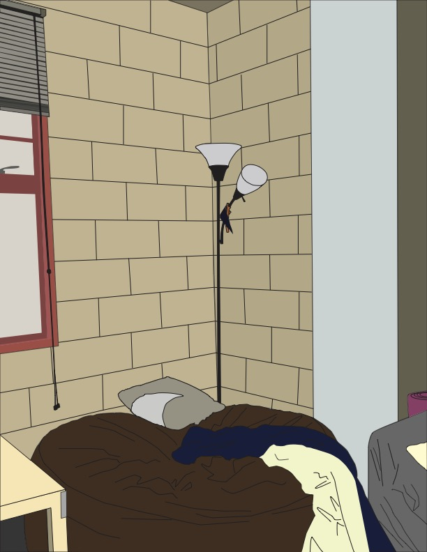
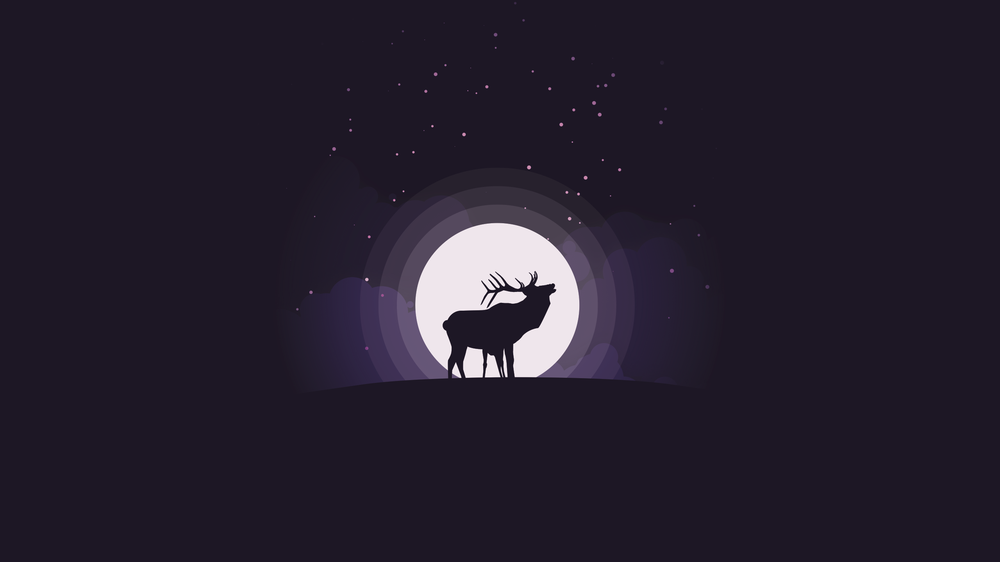
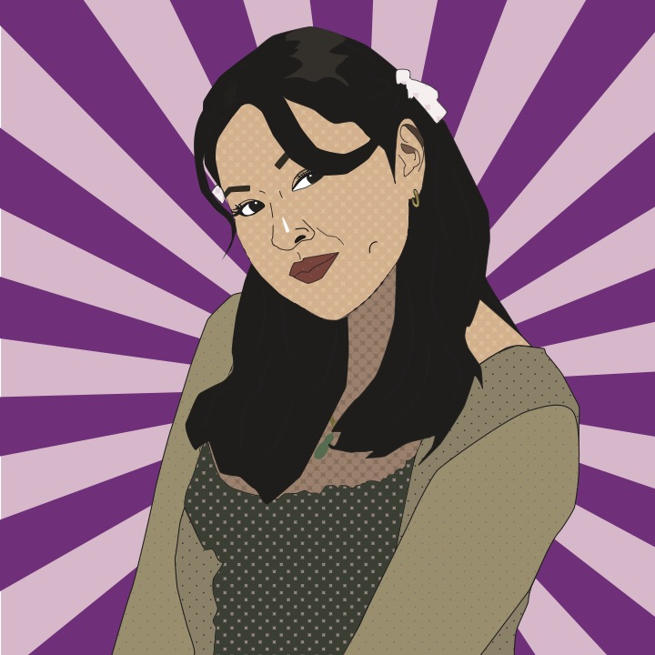
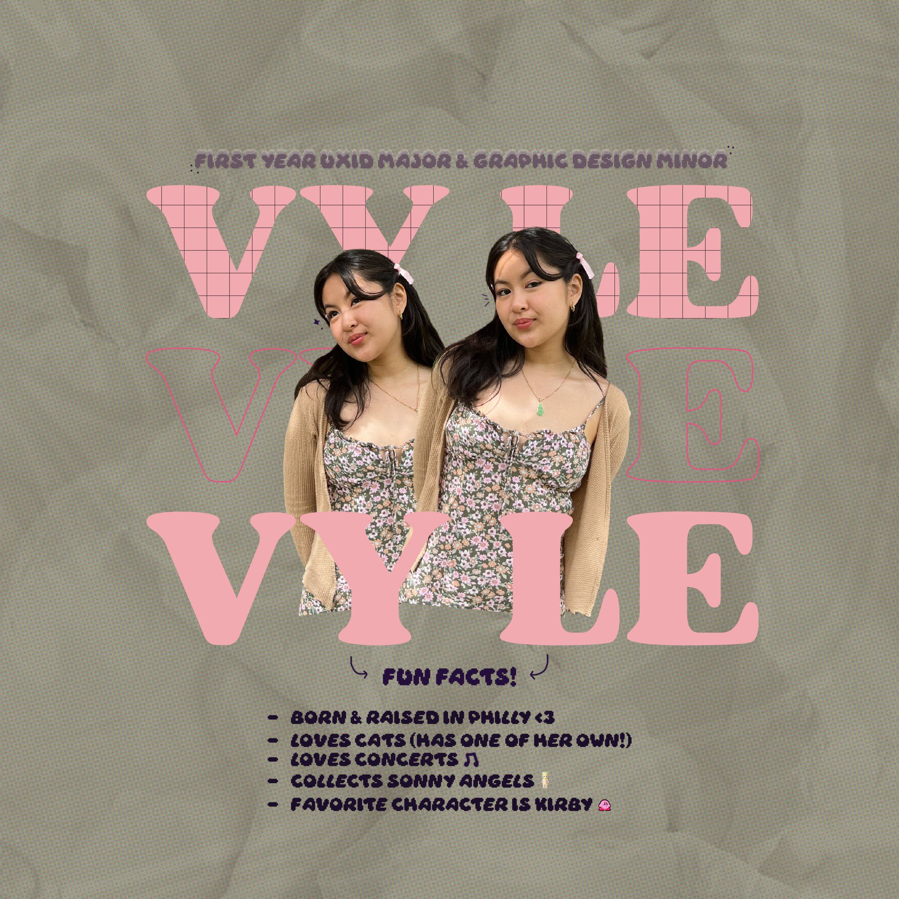

Desert Exercise
Desert Exercise: For this exercise, the purpose of it was to become more familiar with the gradient tool within Adobe Illustrator. I recreated a desert landscape and experimented with a color palette. Using the different gradients and colors, I was able to create a certain depth in the picture to show the full scenery. I incorporated other skills within the exercise such as precise pen tool use for the small features at the bottom and also other brushes to create the scattered look of stars.

Pen Tool Drawing: For this exercise, the purpose of this was to practice pen tool precision and become more familiar with the power the pen tool has. My objective was to make a sketch of any real-life view using the pen tool. I chose a corner of my dorm which contained many intricate lines and folds to really challenge myself when it came to the pen tool. In the end, my precision increased and I became more used to the different usages the pen tool had and learned to use it more efficiently.
Final Poster Piece: For the project, my objective was to pick any social issue and to create a campaign poster for it as my final project in one of my graphic design courses. While going through this process, I was supposed to incorporate many of the elements that I learned during the class.
In the end, I was able to come up with this campaign poster for homophobia during pride month. I used many of the same techniques I learned in class but also incorporated new techniques that I envisioned when I first came up with the piece. This piece received a large amount of positive feedback but also a fair amount of criticism that I can use to apply for future projects.

Moonlight Exercise: For this exercise, it was a simple and short activity that focused on strategically overlapping layers and more pen tool practice. I was also able to play around with transparency within layers in this activity to create shadows and more depth. I used different shades of the same color to add on to the depths and create more of a spotlight for the main subject in this.
Ninja Exercise: For this exercise, the purpose of it was to explore a majority of Adobe Illustrator to become familiar with certain tools and the possibilities the program has. I created these ninjas using the same technique but differing it for each of them to create new poses. Similarly, I also was able to learn new techniques when it came to the weapons that the ninjas hold. I also experimented with stroke weights and adding multiple strokes to create that depth within the characters.

Pop Art Self Portrait: For this exercise, it was inspired by pop art. The main objective was to experiment with colors and include the elements that we see from famous artists such as Andy Warhol. I experimented with patterns and the placements of where I would want them. I also paid attention to shadows and highlights and made sure to include them in this piece.
 Skull Exercise
Skull Exercise: For this exercise, it was one of my first experiences with Adobe Illustrator so the objective was to mess around with the program and become more used to all the tools it had to offer. I ended up going off of a pink and red color palette to create this skull. I used lots of different tools, techniques, strokes, etc. in this exercise that prepared me for later projects.

Social Media Post: For this small project, the objective was to create a social media poster that would allow an audience to get to know you better but to also keep it short. I included small fun facts so that it would feel more personal and then when posted, it would be followed by a description as well. I picked purple and pink as my main colors to go for a playful aura for this social media post. In the end, it was a fun and quick project to work on to show more of my design style and personality.